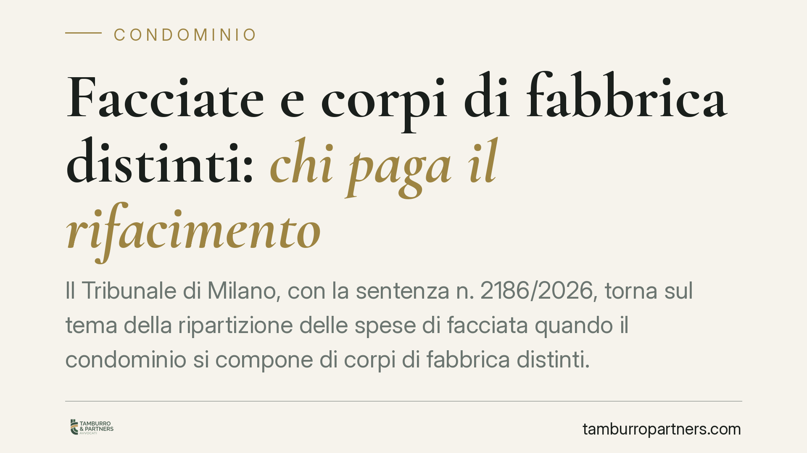
Facciate e corpi di fabbrica distinti: chi paga il rifacimento
Il Tribunale di Milano, con la sentenza n. 2186/2026, torna sul tema della ripartizione delle spese di facciata quando il condominio si compone di corpi di fabbrica distinti. La re…
Bonus edilizi: l'attestazione di congruità vale senza opere realizzate?
Per i bonus edilizi ordinari la cessione del credito presuppone opere effettivamente realizzate, non semplicemente avviate. È un principio con ricadute pesanti sul piano penale e t…

Mediazione obbligatoria e perimetro della domanda: i fatti devono coincidere
Nella mediazione obbligatoria l'istanza di mediazione e la successiva domanda giudiziale devono riguardare la stessa controversia. Il tema della coincidenza non solo del petitum e …

Potere di disposizione dell'Ispettorato del Lavoro e adeguamento delle retribuzioni
Il Consiglio di Stato torna sul potere di disposizione dell'Ispettorato del Lavoro, strumento con cui gli ispettori possono imporre al datore misure organizzative e adeguamenti. Il…
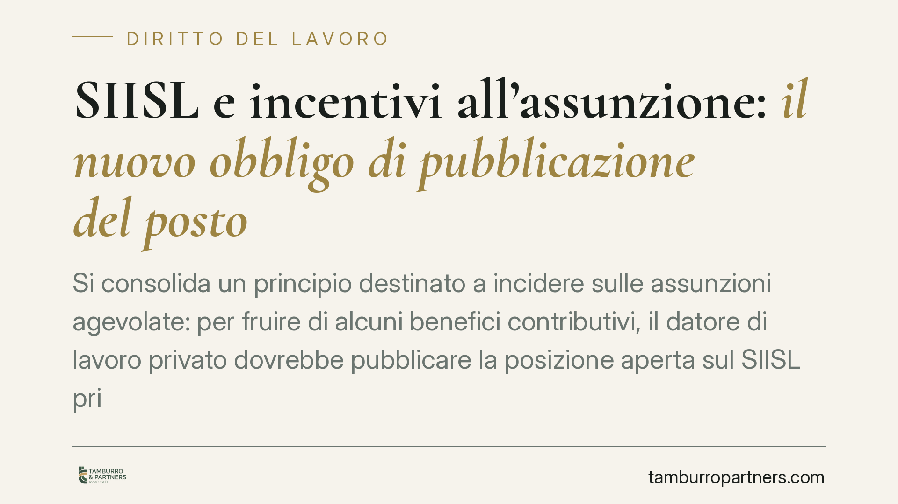
SIISL e incentivi all'assunzione: il nuovo obbligo di pubblicazione del posto
Si consolida un principio destinato a incidere sulle assunzioni agevolate: per fruire di alcuni benefici contributivi, il datore di lavoro privato dovrebbe pubblicare la posizione …
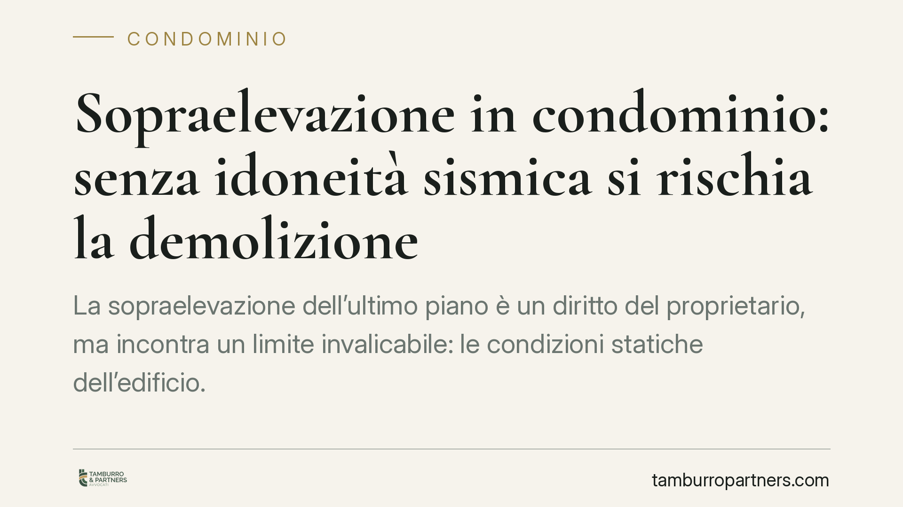
Sopraelevazione in condominio: senza idoneità sismica si rischia la demolizione
La sopraelevazione dell'ultimo piano è un diritto del proprietario, ma incontra un limite invalicabile: le condizioni statiche dell'edificio. Senza la prova preventiva dell'idoneit…
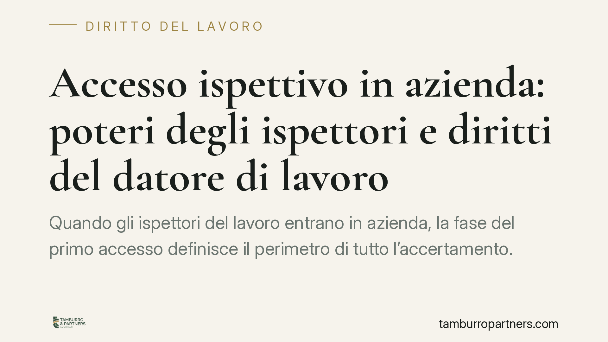
Accesso ispettivo in azienda: poteri degli ispettori e diritti del datore di lavoro
Quando gli ispettori del lavoro entrano in azienda, la fase del primo accesso definisce il perimetro di tutto l'accertamento. Conoscere cosa possono fare, quale valore ha il verbal…

Verbale del medico fiscale: non basta a provare l'assenza del lavoratore
Con la sentenza n. 22621/2026 la Cassazione chiarisce i limiti del verbale del medico fiscale: fa piena prova solo dei fatti che il controllore ha percepito direttamente, non del g…
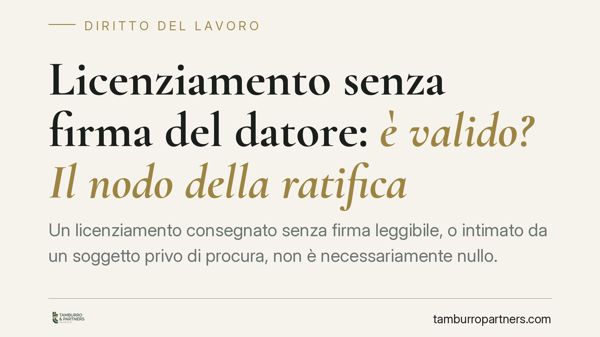
Licenziamento senza firma del datore: è valido? Il nodo della ratifica
Un licenziamento consegnato senza firma leggibile, o intimato da un soggetto privo di procura, non è necessariamente nullo. La giurisprudenza ammette la sanatoria tramite ratifica,…
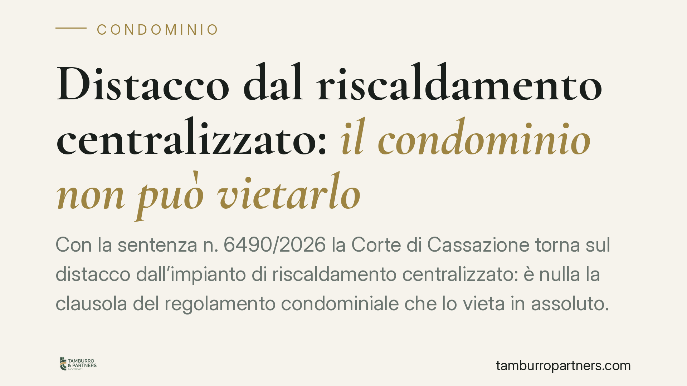
Distacco dal riscaldamento centralizzato: il condominio non può vietarlo
Con la sentenza n. 6490/2026 la Corte di Cassazione torna sul distacco dall'impianto di riscaldamento centralizzato: è nulla la clausola del regolamento condominiale che lo vieta i…
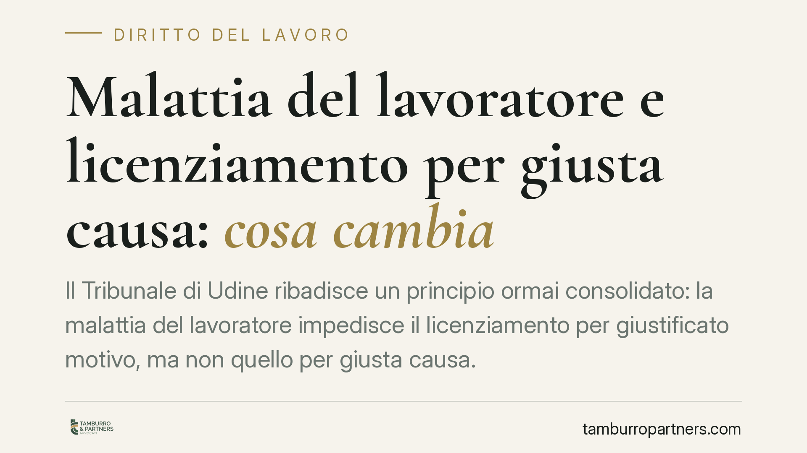
Malattia del lavoratore e licenziamento per giusta causa: cosa cambia
Il Tribunale di Udine ribadisce un principio ormai consolidato: la malattia del lavoratore impedisce il licenziamento per giustificato motivo, ma non quello per giusta causa. Una d…

Mancata comparizione del querelante: non è rinuncia automatica alla querela
Il querelante che non si presenta all'udienza rinuncia alla querela? Non sempre. La Cassazione ribadisce che la remissione tacita richiede un comportamento univoco e volontario, no…

Test del DNA al 99,99%: come si contesta la paternità in tribunale
Una recente ordinanza della Corte di Cassazione ribadisce un principio ormai consolidato: davanti a un test del DNA che indica la paternità al 99,99%, non basta invocare la generic…

Condizione illecita nel testamento: quando cade l'intera disposizione
Imporre all'erede un vincolo sul proprio futuro patrimonio può costare caro: una condizione illecita, se è il solo motivo che ha determinato il testatore, travolge l'intera disposi…

Regolamento condominiale e locazioni turistiche: il divieto va scritto bene
La Corte d'Appello di Milano, con la sentenza n. 514/2026, ha stabilito che un vecchio regolamento condominiale che vieta locande e pensioni non può essere esteso per analogia a B&…

Dipendente pubblico e iscrizione all'albo degli avvocati: quando scatta l'incompatibilità
La sola iscrizione all'albo degli avvocati può bastare a configurare incompatibilità per il dipendente pubblico, anche senza esercizio effettivo della professione. Resta però ferma…
IPTV pirata: vendere codici e smart card è reato. La Cassazione fa chiarezza
Chi acquista e rivende codici o smart card per l'IPTV pirata non è un semplice agevolatore: risponde penalmente in concorso. Lo ribadisce la Corte di Cassazione, che distingue nett…
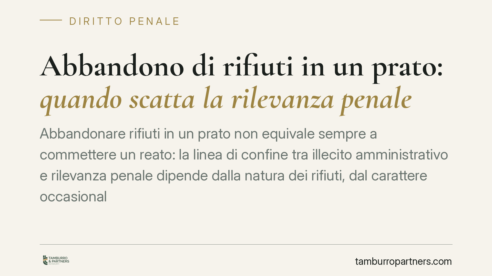
Abbandono di rifiuti in un prato: quando scatta la rilevanza penale
Abbandonare rifiuti in un prato non equivale sempre a commettere un reato: la linea di confine tra illecito amministrativo e rilevanza penale dipende dalla natura dei rifiuti, dal …

Licenziamento via WhatsApp: vale come forma scritta?
Il licenziamento inviato con un messaggio WhatsApp è valido. Lo conferma il Tribunale di Udine: se la comunicazione garantisce certezza, imputabilità e conoscenza del recesso, il r…

Figli nati fuori dal matrimonio prima del 1975: diritto al mantenimento e prescrizione
Un recente arresto della Prima Sezione civile della Cassazione affronta la posizione dei figli nati fuori dal matrimonio prima della riforma del 1975. Il tema tocca due questioni d…
Collocamento dei figli: nessun automatismo per la madre
Nei procedimenti di separazione e divorzio ricorre un'idea diffusa: i figli piccoli vanno sempre collocati presso la madre. Un recente orientamento della Cassazione ridimensiona qu…
Licenziamento disciplinare senza contestazione preventiva: indennità o reintegra?
Un datore di lavoro licenzia per ragioni disciplinari senza aver prima contestato l'addebito. Il lavoratore ha diritto a un'indennità economica o alla reintegra nel posto di lavoro…

Rendita INAIL e risarcimento del danno: i limiti della detrazione secondo la Cassazione
Con l'ordinanza n. 5819/2026 la Corte di Cassazione precisa i confini del cosiddetto scomputo della rendita INAIL dal risarcimento dovuto dal responsabile dell'illecito. La rendita…

Diffida accertativa dell'ispettore del lavoro: come funziona e come opporsi
L'ispettore del lavoro che accerta crediti retributivi non deve passare dal giudice: con la diffida accertativa validata ottiene un titolo esecutivo. Una recente pronuncia d'appell…

Infortuni mortali sul lavoro: la condanna del datore può fondarsi sulla prova indiziaria
Con la sentenza n. 5697/2026 la Cassazione penale conferma un principio dalle ricadute concrete: negli infortuni mortali sul lavoro il datore può essere condannato anche senza test…
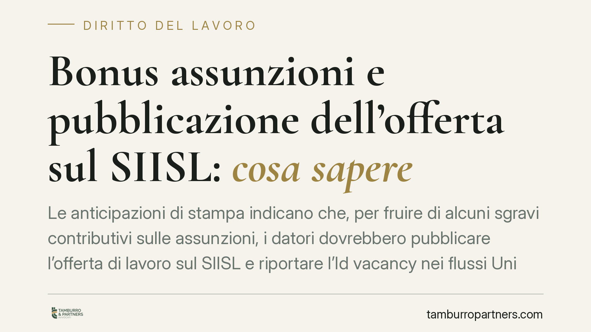
Bonus assunzioni e pubblicazione dell'offerta sul SIISL: cosa sapere
Le anticipazioni di stampa indicano che, per fruire di alcuni sgravi contributivi sulle assunzioni, i datori dovrebbero pubblicare l'offerta di lavoro sul SIISL e riportare l'Id va…
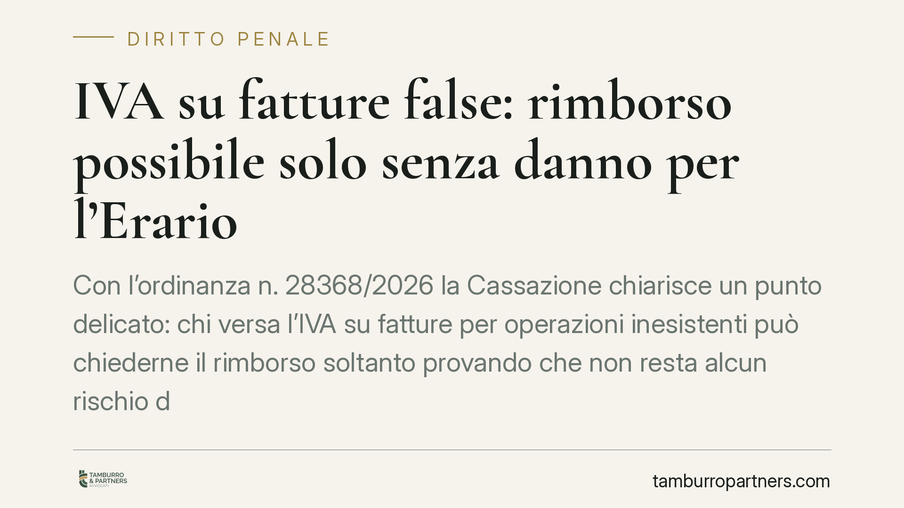
IVA su fatture false: rimborso possibile solo senza danno per l'Erario
Con l'ordinanza n. 28368/2026 la Cassazione chiarisce un punto delicato: chi versa l'IVA su fatture per operazioni inesistenti può chiederne il rimborso soltanto provando che non r…
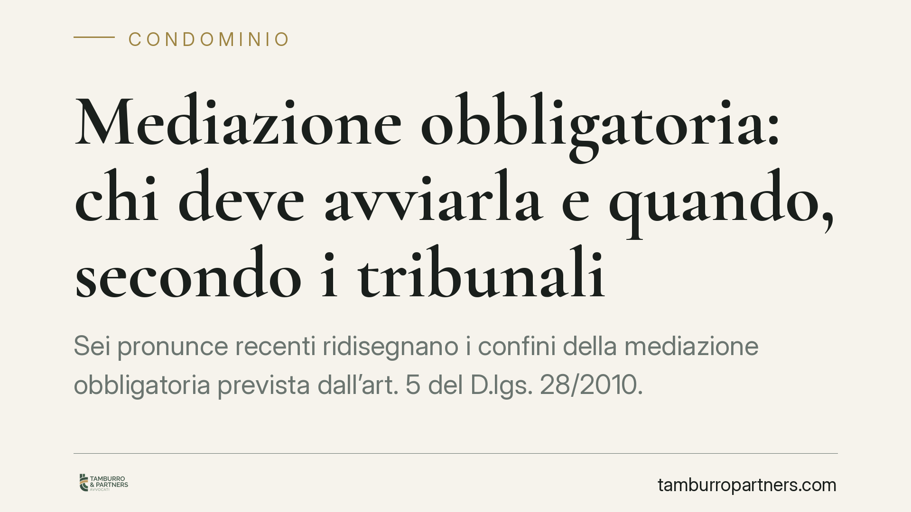
Mediazione obbligatoria: chi deve avviarla e quando, secondo i tribunali
Sei pronunce recenti ridisegnano i confini della mediazione obbligatoria prevista dall'art. 5 del D.lgs. 28/2010. I giudici chiariscono quando la procedura è davvero richiesta, chi…
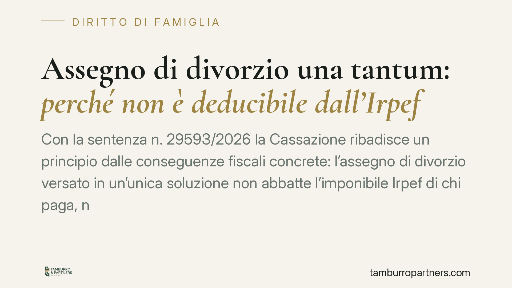
Assegno di divorzio una tantum: perché non è deducibile dall'Irpef
Con la sentenza n. 29593/2026 la Cassazione ribadisce un principio dalle conseguenze fiscali concrete: l'assegno di divorzio versato in un'unica soluzione non abbatte l'imponibile …

Ricovero ospedaliero e assenza non comunicata: quando scatta il licenziamento
Il Tribunale di Udine affronta un nodo ricorrente: il ricovero ospedaliero copre sempre l'assenza del dipendente, anche se questi non avvisa l'azienda? La risposta è no. L'impedime…